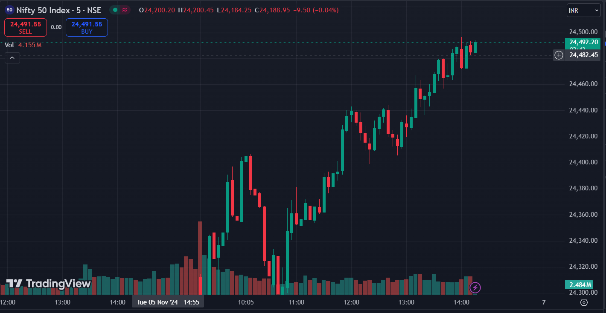

Volatility-Based Decision Making
Q-Learning Algorithm

High-Frequency Trading
Robust in Bearish/Sideways Markets

WHY CHOOSE US?
Satta Bot offers high-frequency trading that’s smarter and faster. With advanced reinforcement learning, it adapts to market volatility in real-time, outperforming traditional strategies. Navigate today’s fast-paced markets with precision, speed, and adaptability—all in one tool.
Learn More